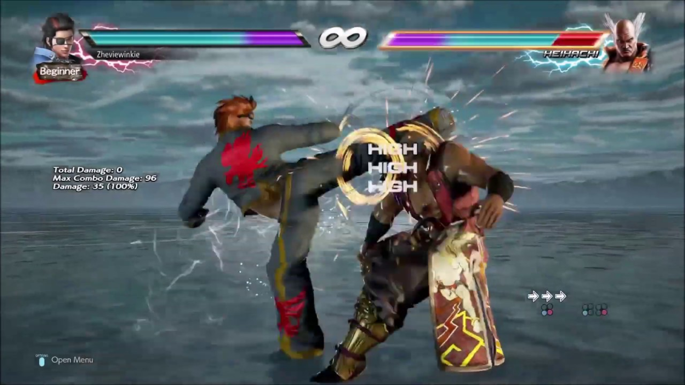

A Great But Ageing Genre: Fighting Games
During the peak period of arcades in the 1990s, 2D fighting games were a popular culture phenomenon.
I spent countless hours honing my abilities in video games like Tekken as a gamer.
since an aspiring game developer today, I can't help but have a negative perspective on this stale
genre, since it gets harder and harder to draw in the next generation of players.
Significant difficulty in mastery.
There is a knowledge gap between younger and more experienced players because it takes practice
to master the controls. Veteran players easily adjust when a new fighting game is introduced since
they are familiar with the learning curve from previous games. New players, on the other hand, must
take the time to understand the experienced players are already ahead of the competition by the time
they master the controls.This disparity may discourage new players and result in them leaving the game.
A 2D Camera Setup
Although the camera may not be a fundamental issue, it is important to understand its design
implications because it contributes to the overall challenge of playing a combat game.
Kung-Fu Master served as a source of inspiration for Street Fighter because it had a
horizontal 2D camera, which was typical in earlier video games. However,when combined with
the challenging controls, this camera view may seem strange to new players who are used to
3D spatial movement.
Conclusion
Please understand that I'm not attempting to disparage the fighting game genre.
But because I love this genre so much, I believe that as long as this genre is based on
an arcade-based design, it will always be static among an audience of ageing players.
This is true regardless of how many new versions of Guilty Gear or The King of Fighters
are released or regardless of waiting for a potential new fighting game.